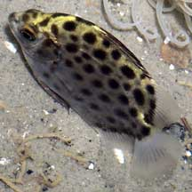
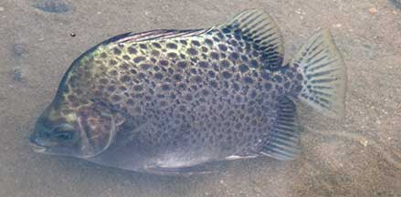
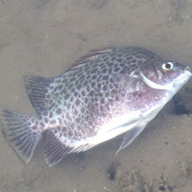
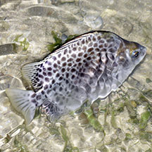
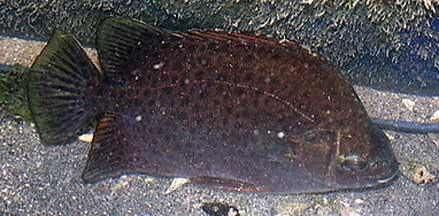
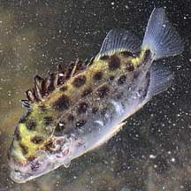
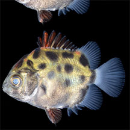
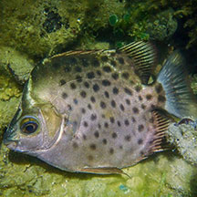

| Phylum Chordata
> Subphylum Vertebrata > fishes >
Family Scatophagidae |

Chek Jawa, Oct 03 |

Tanah Merah,
May 10 |
What does it eat? It eats detritus
and algae from the sea bottom as well as worms, insects and small
crustaceans. It also eats droppings of other animals including ours.
Its scientific name 'scatophagus' means 'shit-eater'.
Human uses: Spotted scats are
a popular catch among anglers. They are also marketed fresh and
as live fish for the table. Juveniles are said to be popular aquarium
fish. According to FishBase, it is used in traditional Chinese medicine. |
| Spotted
scats on Singapore shores |
| Other sightings on Singapore shores |

Beting Bronok, Jun 14
Photo shared by Russel Low on facebook. |

Pulau Sekudu, Jul 16
Photo shared by Loh Kok Sheng on his
blog. |
|

Tanah Merah, Oct 09
Photo shared by James Koh on his
blog. |

Tanah Merah, Oct 09
Photo shared by James Koh on his
blog. |

Juvenile.
West Coast Park, Oct 16
Photo shared on the Singapore Biodiversity Records |

Pulau Hantu, Jul 20
Photo shared by Juria Toramae on facebook. |
|
Family
Scatophagidae recorded for Singapore
from
Wee Y.C. and Peter K. L. Ng. 1994. A First Look at Biodiversity
in Singapore.
| |
Scatophagus
argus (Spotted scat) |
|
Links
- Spotted
Scat (Scatophagus argus) Lim, Kelvin K. P. & Jeffrey
K. Y. Low, 1998. A
Guide to the Common Marine Fishes of Singapore. Singapore
Science Centre. 163 pp.
- Scat
or Butterfish (Scatophagus argus) Tan, Leo W. H. &
Ng, Peter K. L., 1988. A
Guide to Seashore Life. The Singapore Science Centre,
Singapore. 160 pp.
- Spotted
scat (Scatophagus argus) Ng, Peter K. L. & N. Sivasothi,
1999. A Guide
to the Mangroves of Singapore II (Animal Diversity). Singapore
Science Centre. 168 pp
- Scatophagus argus (Perciformes: Scatophagidae) Spotted Scat by Joleen Chan, 2014, on taxo4254
- Scatophagus argus on NParks Flora and Fauna website.
- Family
Scatophagidae from FishBase:
Technical fact sheet on the family, including fact sheets on individual
species. Scatophagus
argus (Spotted scat).
References
- Tan Heok Hui & Tan Siong Kiat. Juvenile spotted scats at West Coast Park. 31 March 2017. Singapore Biodiversity Records 2017: 38-39 ISSN 2345-7597. National University of Singapore.
- Wee Y.C.
and Peter K. L. Ng. 1994. A First Look at Biodiversity in Singapore.
National Council on the Environment. 163pp.
- Allen, Gerry,
2000. Marine
Fishes of South-East Asia: A Field Guide for Anglers and Divers.
Periplus Editions. 292 pp.
- Lieske, Ewald
and Robert Myers. 2001. Coral
Reef Fishes of the World
Periplus Editions. 400pp.
|
|
|